Reviewer Walkthrough
A guided tour of the CMS Claims Comparison Pipeline — what to look at, in what order, and why it matters.
Hosted Version
A live, read-only version of the reports and documentation is available — no setup required:
- Comparison Report — the primary deliverable with KPIs, charts, and findings
- Documentation Hub — interactive tools, design docs, and architecture diagrams
- Reviewer Walkthrough — this page, hosted online with all screenshots
0. Data Setup (before running anything)
The pipeline requires CMS data files on disk. See README.md → Data Setup for full details, but in short:
Old system data (required): Download CMS DE-SynPUF Sample 1 — 3 Beneficiary Summary ZIPs + 2 Carrier Claims ZIPs. Place them in data/original_downloads/ (auto-extracted) or extract CSVs directly into data/old_system/.
New system data (for comparison): Unzip the assessment-provided New Claims System Outputs.zip into data/new_system/.
data/
├── original_downloads/ # Place ZIPs here (auto-extracted by Step 1)
├── old_system/ # Or place extracted CSVs here directly (5 files)
├── new_system/ # New system CSVs for comparison
└── database/ # Auto-created by pipeline
The -v "$(pwd)/data:/app/data" flag in the Docker commands below mounts your local data/ folder into the container so the pipeline can read your CSV files.
1. Running the Pipeline (Terminal)
The pipeline runs end-to-end with a single command. No configuration needed — it auto-discovers CSV files by reading their headers.
# Local
python -m src.main --new-data data/new_system/
# Or Docker (fully containerized, no Python install required)
docker build -t cms-pipeline .
docker run --rm -p 8888:8888 \
-v "$(pwd)/data:/app/data" \
-v "$(pwd)/reports:/app/reports" \
cms-pipeline
All 6 pipeline steps execute in sequence with gate logic — Steps 1-2 halt early on bad input before expensive processing begins.
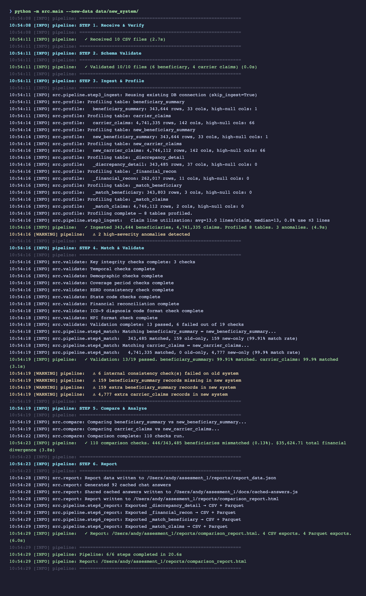
2. Test Suite
The project has 87 tests across two categories:
- 54 unit/integration tests — use synthetic data (in-memory DuckDB + temp files). No real data needed. Run in ~3 seconds.
- 33 real-data tests — validate the actual CMS files (row counts, schemas, data quality, cross-system consistency). Auto-skipped if data is not present.
pytest tests/ -v
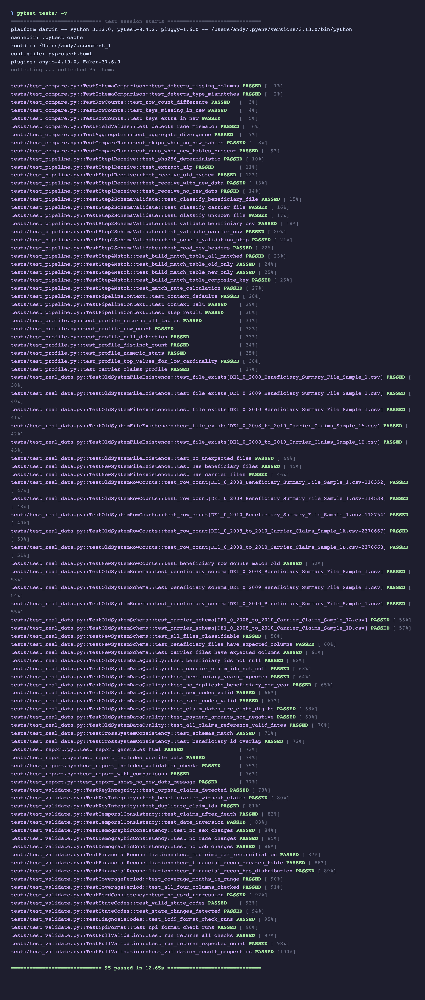
3. The Report
Start the local server first (interactive charts, Schema Explorer, SQL Explorer, and Parquet Viewer require HTTP):
./scripts/serve.sh # http://localhost:8888
Then open http://localhost:8888/reports/comparison_report.html — this is the primary deliverable. It's designed for progressive disclosure: KPIs first, then narrative, then detailed charts, then raw data.
Executive Summary
The top of the report shows key metrics at a glance: total beneficiaries, total claims, matched/unmatched counts, and pass/fail indicators for each validation category.
A reviewer should be able to answer "what's wrong and how bad is it" within 10 seconds of opening the report.
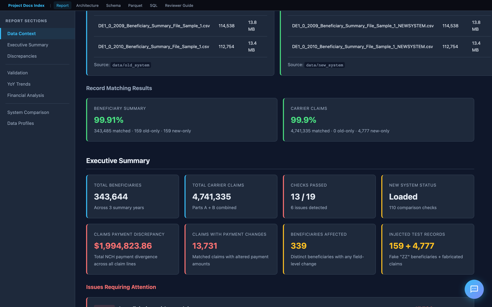
Key Findings
Below the KPIs is an interpretive narrative — not just numbers, but what they mean. This includes root cause hypotheses, risk assessment, and a clear recommendation on whether the new system is ready for cutover.
This section demonstrates domain understanding: the analysis is informed by the CMS codebook, not just the data structure.
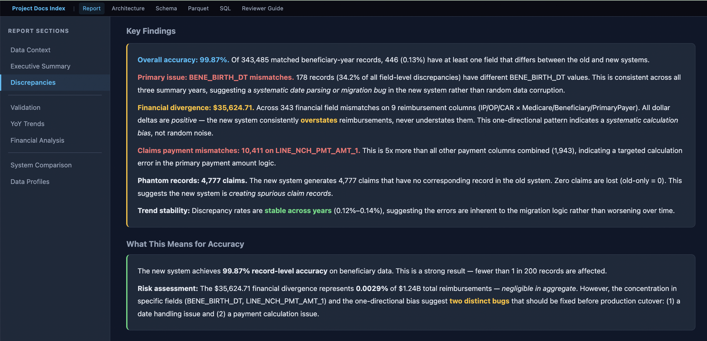
Validation Results
Internal consistency checks on the old system data. The bar chart shows issues found per check across four categories:
| Category | What it checks |
|---|---|
| Identity | Orphan claims, beneficiaries without claims, duplicate claim IDs |
| Temporal | Claims after death, date inversions (start > end) |
| Demographic | Sex/race/DOB changes across years for the same beneficiary |
| Financial | Carrier reimbursement reconciliation (MEDREIMB_CAR, BENRES_CAR, PPPYMT_CAR) |
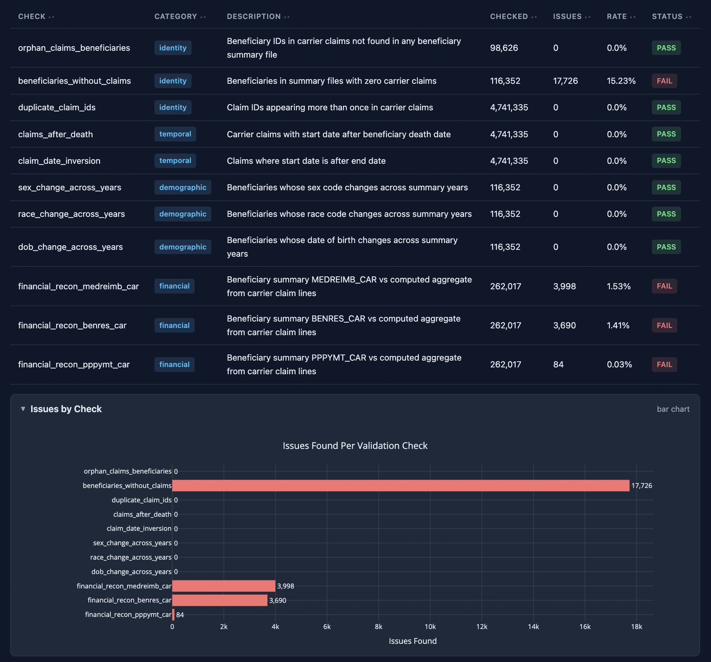
Financial Reconciliation
The financial reconciliation section deserves special attention. It compares beneficiary summary reimbursement totals against the sum of individual claim line items — the logic is derived from the CMS codebook (filtering on LINE_PRCSG_IND_CD values, summing LINE_NCH_PMT_AMT across 13 line items per claim).
This directly addresses the assessment requirement: "Total number of Claims whose payments don't match."
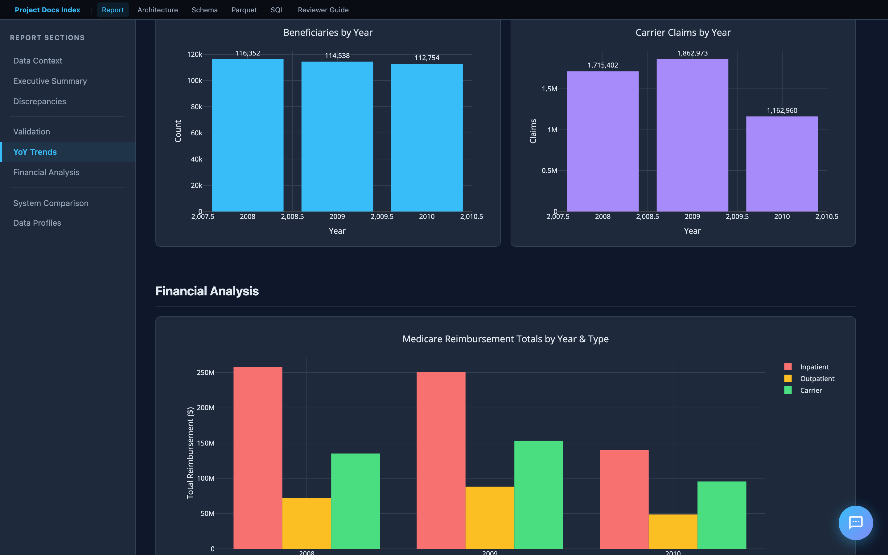
System Comparison (Old vs New)
When new system data is loaded, the report adds a comparison dashboard:
- Schema comparison — missing/extra columns, type mismatches
- Row-level diffs — records in old but not new (and vice versa), matched by key
- Field-level mismatches — per-field value diffs on matched records
- Aggregate divergence — sum/mean differences in financial columns
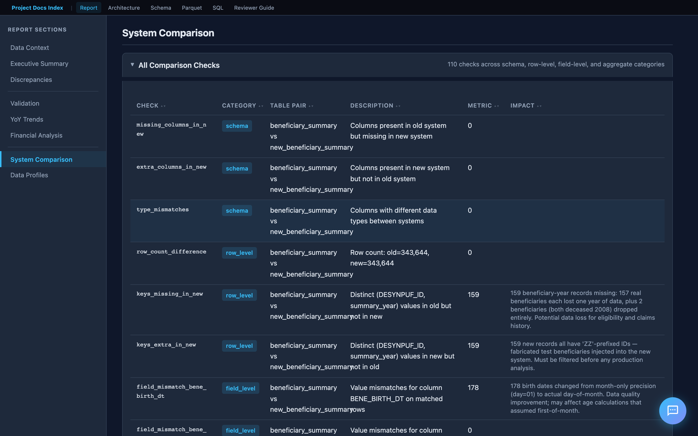
Year-over-Year Trends
Interactive Plotly charts show how metrics change across 2008–2010. The assessment specifically asks to "identify any trends" — these charts surface patterns like increasing beneficiary attrition, financial drift, and seasonal claim volume shifts.
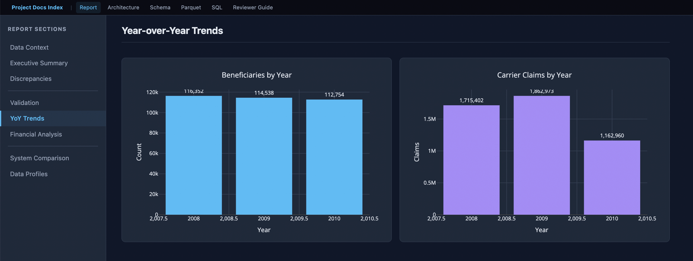
4. Documentation Hub
The project includes a documentation site with interactive tools and design documentation. When running via Docker, it's served at http://localhost:8888. Otherwise, open docs/index.html directly.
Landing Page
The hub links to everything: the comparison report, interactive tools, design documentation, and CMS reference materials (codebook, FAQ, data users guide).
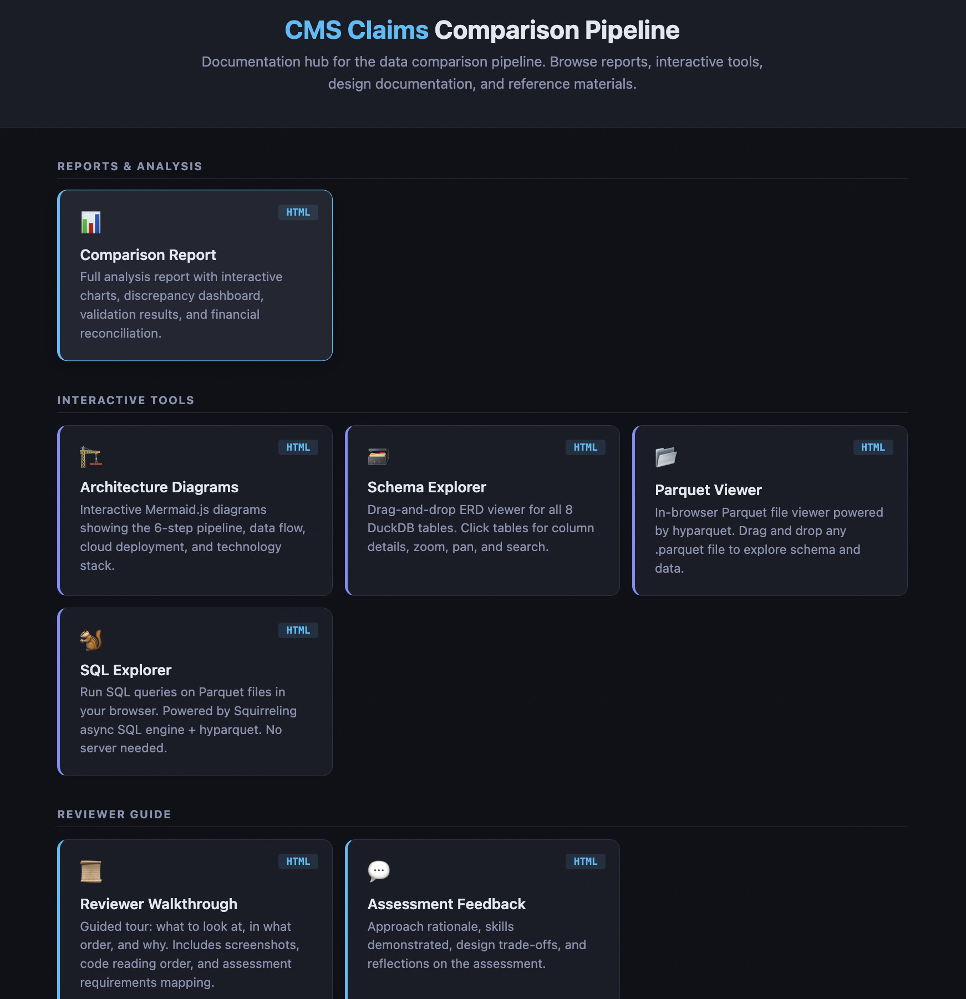
Interactive Tools
The project includes several in-browser tools that require no server:
| Tool | What it does |
|---|---|
| Schema Explorer | Drag-and-drop ERD viewer for all DuckDB tables. Click for column details. |
| Parquet Viewer | In-browser Parquet file viewer (powered by hyparquet). Drag and drop any .parquet export. |
| SQL Explorer | Run SQL queries on Parquet files in the browser. No server needed. |
| Architecture Diagrams | Interactive Mermaid.js diagrams of the pipeline, data flow, and cloud deployment. |
Schema Explorer
The ERD viewer renders all 8 DuckDB tables as draggable cards with column names, types, and foreign key relationships. Click any table to expand its full column details. Supports zoom, pan, and search.
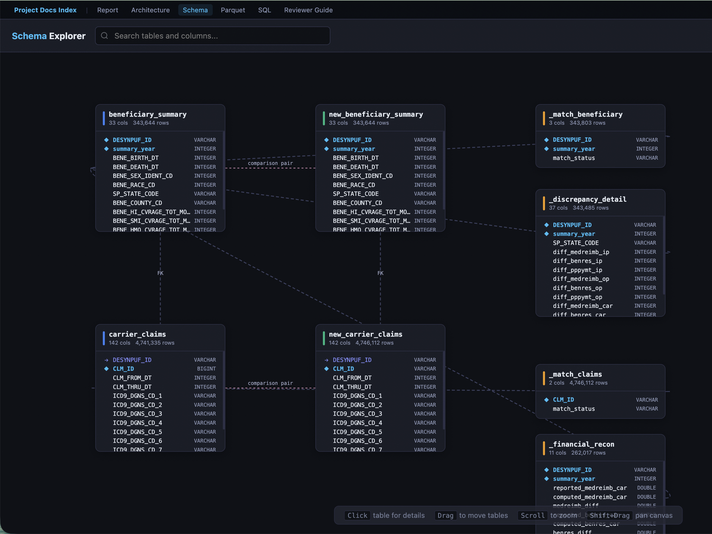
SQL Explorer
A browser-based SQL query editor powered by Squirreling's async SQL engine + hyparquet. Load any exported Parquet file and run ad-hoc queries — no server or database connection required. Includes sample queries to get started.
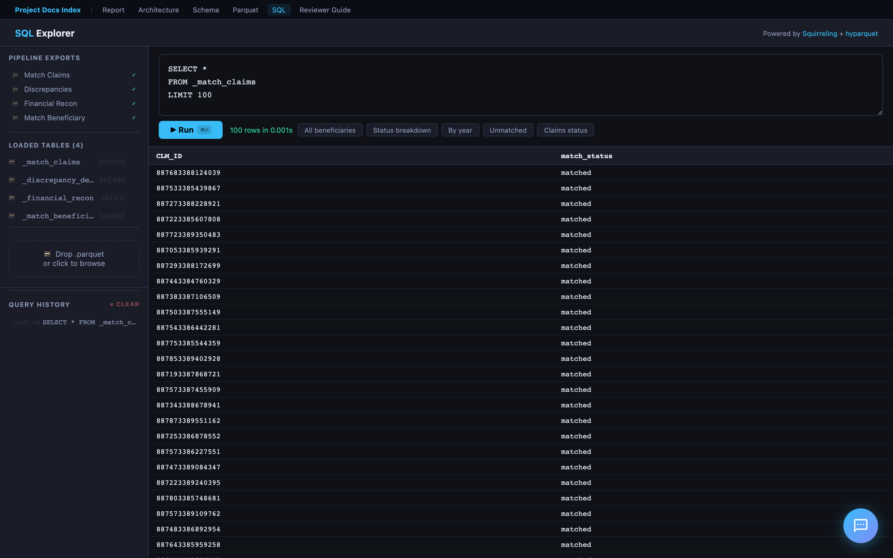
Parquet Viewer
Drag and drop any .parquet file to instantly view its schema (column names, types, row count) and preview the first N rows in a formatted table. Powered by hyparquet for fully client-side parsing.
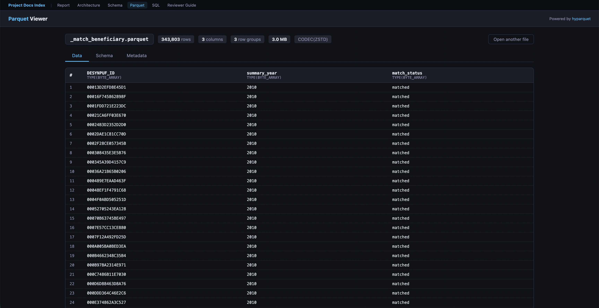
Report Pal (AI Chat Assistant)
Every page in the hosted report includes Report Pal — an AI assistant that helps reviewers explore findings through natural conversation.
How to Try It
- Open the hosted report
- Click the chat bubble in the bottom-right corner
- Choose Text (type questions) or Voice (speak naturally via WebRTC)
Text Mode
- Powered by GPT-4o with live DuckDB access — it writes and runs SQL to answer data questions
- Pre-cached answers for common questions (instant, no API call)
- SQL queries shown inline with copy-to-clipboard and "Open in SQL Explorer" links
- Suggested questions bar + autocomplete for quick exploration
Voice Mode
- Powered by OpenAI Realtime API via WebRTC — full-duplex voice conversation
- AI speaks with OpenAI's coral voice; user speech transcribed via Whisper
- Stop button (🔇) in header bar immediately cancels AI voice mid-sentence
- No push-to-talk — server VAD detects when you start/stop speaking
Cached Answers — How They Are Generated
Every page loads docs/cached-answers.js — 92 pre-built Q&A pairs that provide instant responses without hitting the Lambda API.
Authorship: The answer text — the analytical narratives, conclusions, risk assessments, and Codebook references — was authored by Cascade (AI pair programmer) during development. Each answer is an f-string template in src/chat_answers.py where the prose is fixed and ~30 dynamic data points from the pipeline results are interpolated at build time. So the answers are AI-authored analysis with real pipeline data — not raw AI generation at runtime, and not purely hand-written either.
Generation flow:
- The pipeline runs all validation, comparison, and analysis checks
- Step 6 (
src/report.py) callsgenerate_cached_answers()fromsrc/chat_answers.py chat_answers.pyextracts data points from pipeline results (match statistics, validation outcomes, trends, financial reconciliation, etc.)- These are interpolated into the AI-authored f-string templates — producing Markdown answers with tables, bullet points, and CMS references
- Each answer is paired with relevant SQL queries (for the "Review SQL" button)
- The output is serialized to
docs/cached-answers.jsand loaded on every page beforechat-widget.js
Question categories (organized by Bloom's Taxonomy level):
| Level | Example | Count |
|---|---|---|
| 6 — Create | "Draft a go/no-go recommendation for the system migration" | 5 |
| 5 — Evaluate | "Based on the Codebook, which discrepancies represent true data corruption?" | 5 |
| 4 — Analyze | "Why does the 0.90 payment ratio affect all claim lines uniformly?" | 4 |
| 3 — Understand | "Can you explain the coverage period validation?" | ~20 |
| 2 — Remember | "What does BENE_HMO_CVRAGE_TOT_MONS mean?" | ~7 |
| 1 — Retrieve | "Which validation checks failed?" | ~15 |
For anything not cached (or fuzzy match < 60%), the widget falls through to the Lambda API.
Lambda & Backend Functions
Report Pal relies on two Lambda backends. The source code is proprietary — only the hardcoded Function URLs are present in chat-widget.js.
1. Chat Lambda — Multi-Provider AI Proxy (LAMBDA_URL)
Proxies user questions to AI models with full DuckDB database access. Supports three providers — switch models from the chat widget's config drawer (hover over the bottom bar):
| Provider | Models | Auth |
|---|---|---|
| OpenAI | GPT-4o (default), GPT-4o Mini | SSM API key |
| OpenRouter | Claude Sonnet 4, Gemini 2.0 Flash, Llama 3.3 70B | SSM API key |
| AWS Bedrock | Nova Pro, Nova Lite, Nova Micro | IAM role (no key) |
All providers share the same system prompt (src/chat_prompt.py), DuckDB database, and query_database tool (up to 5 rounds of SQL execution per question). OpenAI and OpenRouter use the OpenAI Python SDK (OpenRouter with a different base_url). Bedrock uses the boto3 Converse API with the tool spec converted from OpenAI format.
The model selector persists your choice in localStorage — switch at any time, no setup required.
2. Session Lambda — Voice Token Generator (SESSION_LAMBDA_URL)
Thin proxy for WebRTC voice sessions — no data processing, no DuckDB:
- Retrieves OpenAI API key from SSM
- Calls OpenAI
/v1/realtime/sessions→ ephemeral token (expires 60 seconds) - Browser uses token to connect directly to OpenAI Realtime API (
gpt-4o-realtime-preview-2025-06-03) - Voice session configured via
session.update: condensed Report Pal prompt,coralvoice, server-side VAD,whisper-1transcription
The Session Lambda source code is a standalone deployment (not in this repository).
Security
- No API keys in the browser — all OpenAI calls go through Lambda backends
- Ephemeral tokens for voice mode expire after 60 seconds
- OpenAI API key stored in AWS SSM Parameter Store
- No credentials committed to the repository
Code Reading Order
For reviewers who want to understand the code:
| Order | File | Lines | Why |
|---|---|---|---|
| 1 | README.md |
— | Entry point: Quick Start, architecture, project structure |
| 2 | FEEDBACK.md |
— | Approach rationale, skills demonstrated |
| 3 | src/pipeline/__init__.py |
~50 | Defines PipelineContext and StepResult — the pipeline's data model |
| 4 | src/pipeline/runner.py |
~40 | The 6-step orchestrator with gate logic |
| 5 | src/validate.py |
— | Deepest analytical work: financial reconciliation SQL, temporal checks |
| 6 | src/compare.py |
— | Old-vs-new comparison engine |
| 7 | src/report.py |
— | HTML report generation with Plotly charts |
| 8 | src/chat_prompt.py |
~130 | Shared Report Pal system prompt and OpenAI tool definitions |
| 9 | docs/chat-widget.js |
~1600 | Self-contained AI chat widget (text + WebRTC voice) |
| — | docs/cached-answers.js |
(generated) | 92 pre-built Q&A pairs loaded on all pages (auto-generated by pipeline) |
| 10 | tests/conftest.py |
~160 | How test data is designed with intentional edge cases |
| 11 | docs/SOLUTION.md |
— | Design decisions explained in prose |
| 12 | docs/REQUIREMENTS_TRACEABILITY.md |
— | Maps every spec requirement to its implementation |
Assessment Requirements Mapping
| Spec Requirement | Where to Find It |
|---|---|
| Ingest and clean the data | src/ingest.py, pipeline Step 3 |
| Build a simple ETL pipeline | 6-step pipeline (src/pipeline/), DuckDB (data/database/) |
| Identify and quantify discrepancies | Report: Validation Results, System Comparison |
| Identifiable trends | Report: Year-over-Year Trend Charts |
| Total number of Beneficiaries whose data does not match | Report: Executive Summary KPIs |
| Total number of Claims whose payments don't match | Report: Financial Reconciliation |
| Generate a report | reports/comparison_report.html — interactive HTML with charts |
| Source code | All in src/, tests/, cloud/, infra/ |
| Screenshots | screenshots/ directory |
| README.md | This file + README.md |
| FEEDBACK.md | FEEDBACK.md |
Key Design Decisions
-
DuckDB over Pandas — SQL is clearer for the complex joins and aggregations in financial reconciliation. DuckDB handles the 2.4 GB carrier claims files without memory pressure and requires no server.
-
6-step pipeline with gate logic — each step is independently testable and can halt early. This mirrors production data pipeline design.
-
Report for communication — executive summary and failed checks upfront, interactive charts for trends, data profiles as reference material. Designed for both technical and non-technical audiences.
-
Docker for portability —
docker build && docker runruns everything on any machine. -
87 tests — 54 synthetic (no data needed) + 33 real-data validation. Tests cover every pipeline step and core module.
-
Flexible file discovery — the pipeline discovers CSVs by column headers, not filenames. Works with any of the 20 CMS DE-SynPUF samples without code changes.